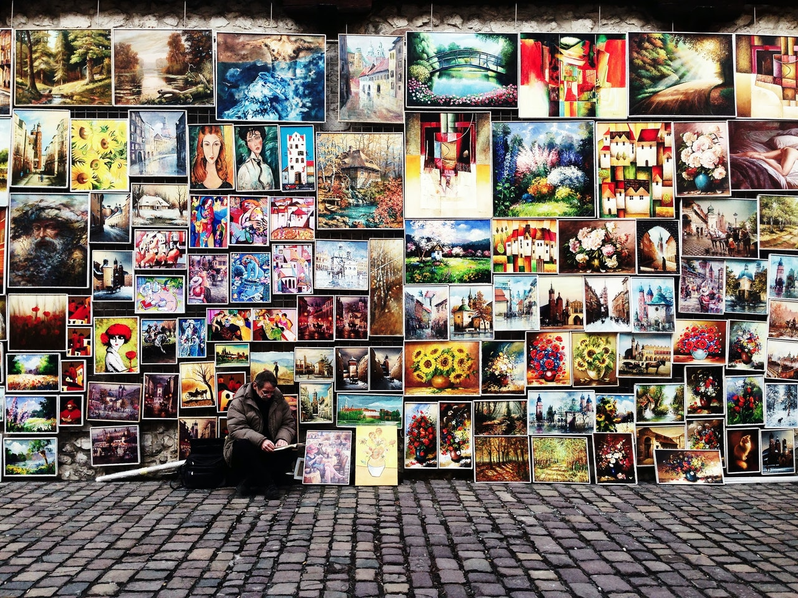

- 100 Days of UX
- Collage
Creating collages allows participants to visually express thoughts, desires,
emotions, and other aspects of life that may be difficult to via other traditional means.
Collage is Day 14 of 100 Days of UX, an exploratory effort to
survey the 100 methods of design outlined in
Martin and Hannington's Universal Methods of Design. For 100 consecutive days, I learn one new method
a day and write about it.

Steps
-
Gather supplies: Pens, paper, glue, image clippings, blank sheets of paper.
-
Recruit participants
-
Brief participants on the method and give them a prompt.
-
When they are finished, ask them to describe the collage and how it speaks to the prompt.
-
Listen and record.
Putting together a collage kit requires a fine balancing act, as the images need to be ambiguous enough
to avoid biasing the participants, but specific enough so that they are relevant to the topic being
collaged.
References
-
Martin, B., & Hanington, B. (2012). Universal Methods of Design: 100 ways to research complex
problems, develop innovative ideas & Design effective solutions. Rockport
-
IDEO.org (n.d.). Collage. Retrieved June 16, 2017
-
Bredouw, M. (n.d.). Collage - Method in Action. Retrieved June 16, 2017
Day 13 - Cognitive Walkthrough
100 Methods
Day 15 - Competitive Testing